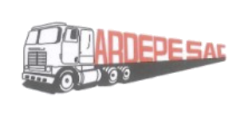
ARDEPE
Una flota dividida en dos operaciones, con datos que no se traducían en gestión
ARDEPE es una empresa de transporte de carga que opera bajo dos frentes claramente diferenciados, cada uno con su propia dinámica, sus propios costos y sus propios riesgos operativos.
Toda la flota está monitoreada, lo que le da al cliente una base de datos de telemetría robusta, pero sin herramientas que la traduzcan a información de gestión, se quedaba en datos crudos, sin uso práctico para esas tres áreas.
Procesos manuales, desgaste operativo y una relación comercial en riesgo
ARDEPE dependía casi por completo de procesos manuales para sostener su operación diaria. El área de Mantenimiento armaba a mano, mes a mes, los cálculos de consumo y costo real de combustible por unidad, cruzando planillas. El área de Operaciones tenía que validar manualmente, contra el equipo de Monitoreo, qué unidades habían cumplido sus rutas, cuánto tiempo pasaron en cada Centro de Distribución, y si las horas de conducción reportadas por cada chofer coincidían con la realidad para efectos de pago. A esto se sumaban inconsistencias en el servicio que el cliente venía percibiendo.
Este desgaste representaba horas de trabajo especializado, todos los meses, solo para tener visibilidad de lo que ya estaba pasando en la flota. Ya desde finales de 2025 el cliente tenía en mente evaluar un cambio de proveedor, y esa intención se consolidó a inicios de 2026, al no sentir que la plataforma resolviera estas necesidades del día a día ni las inconsistencias de servicio. El reto era claro: convertir datos crudos de telemetría en información de gestión accionable, sin depender de trabajo manual, y recuperar la confianza del cliente en el servicio.
Mantenimiento, Operación y Seguridad
Un caso que atraviesa los tres frentes de la gestión de flota al mismo tiempo: control de costos (Mantenimiento), seguimiento en tiempo real de la operación (Operación), y comportamiento de conducción (Seguridad).
El punto de partida, antes de las herramientas
Qué se buscaba lograr
- Reducir drásticamente el tiempo que le toma al cliente convertir datos crudos de telemetría en información de gestión accionable.
- Automatizar los cálculos de costo real de combustible y kilometraje.
- Dar a Operaciones una herramienta de seguimiento en tiempo real que reemplace la validación manual con Monitoreo.
- Depurar los eventos de acelerómetro hasta un número realmente controlable y accionable por mes, eliminando falsos positivos.
- Validar en campo el umbral de velocidad que el cliente debía controlar, en línea con su exigencia de no superar los 80 km/h.
- Sostener y profundizar la relación comercial, en un momento en que el cliente evaluaba cambiar de proveedor.
Cuatro herramientas a medida, más acompañamiento directo en campo
Antes de programar cualquier cosa, hubo trabajo de campo para entender cómo trabajaba ARDEPE por dentro. Esa lógica real fue la que se llevó a herramientas automatizadas, integradas directo a MyGeotab. Cada pestaña de abajo es un desarrollo distinto.
Seguridad: prueba de ruta (video)
Prueba realizada en conjunto con el área de SSOMA de Operaciones, con el objetivo de definir los parámetros de acelerómetro (frenadas, aceleraciones y giros) y de velocidad, ajustados a la realidad de la ruta y el terreno de la operación. Se hizo acompañamiento en campo y capacitación directa a los conductores. Con esta prueba se definió el umbral de control: velocidades mayores a 70 km/h sostenidas por más de 10 segundos, en línea con la exigencia del cliente de no superar los 80 km/h. Misma prueba registrada en dos unidades y conductores distintos, como evidencia cruzada.
Control de Kilómetros
Cálculo automático de odómetro, rendimiento (km/galón), costo por km y consumo acumulado, con carga manual o masiva y vistas de Detalle y Resumen.
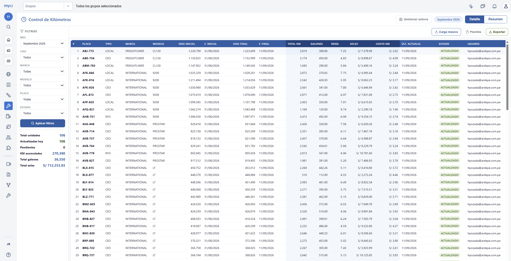
Lead Time por CD
Seguimiento en tiempo real de cada viaje de Planta a Centros de Distribución y su retorno, con rankings de los CD con mayor tiempo de espera.
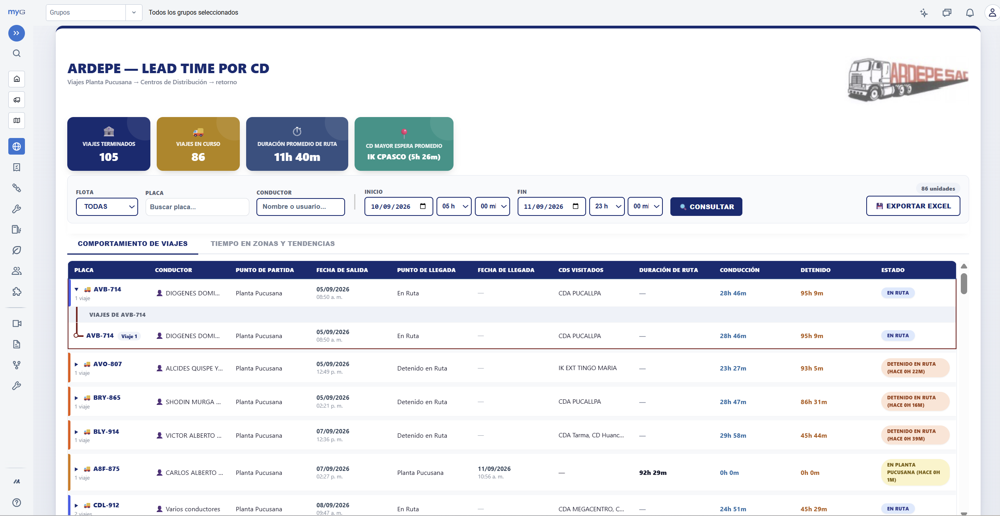
Control de Horas de Conducción
Reconstrucción precisa de horas manejadas, tiempo detenido, y detección de relevos de unidad o tramos sin conductor asociado, clave para validar los pagos por horas trabajadas.
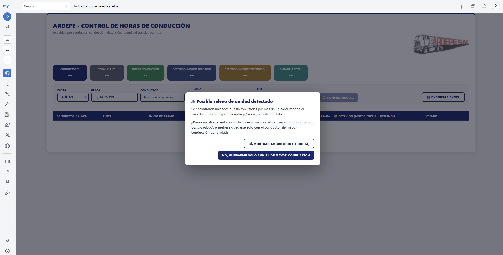
Control de Ingreso a Taller / Neumático
Detección automática de ingresos y salidas de cada unidad, tiempos de permanencia, y visibilidad en tiempo real de qué unidades siguen "en taller" ahora mismo.
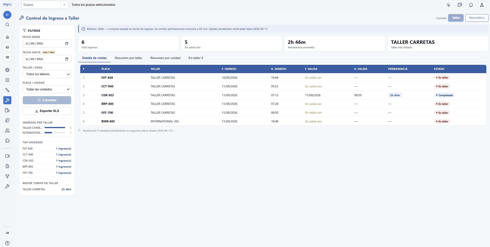
La evolución frente a la línea base
El cliente, que desde fines de 2025 evaluaba un cambio de proveedor, hoy usa estas herramientas como parte integral de su operación diaria en Mantenimiento, Operaciones y Seguridad.
Porque lo consideramos una mejora continua: atendió a la vez tres pilares del mismo cliente (Mantenimiento, Operación y Seguridad), con resultados medibles en cada uno. El cliente, que a inicios de 2026 evaluaba un cambio de proveedor, hoy usa estas cuatro herramientas como parte de su operación diaria, y la relación sigue en desarrollo.
ARDEPE ya contaba con reportes personalizados en Power BI, pero estos no llegaban al nivel de profundidad ni de integración directa con la gestión interna que sí lograron los desarrollos a medida, sumado al acompañamiento en campo en temas de seguridad vial. Esa combinación, herramientas que resuelven el trabajo diario más acompañamiento real con los conductores, es lo que el cliente valora hoy en la relación.
Entender a fondo el proceso manual del cliente antes de automatizarlo (no partir de un molde genérico) y complementar la herramienta digital con acompañamiento presencial en campo: la suma de ambas genera más confianza que cualquiera de las dos por separado.
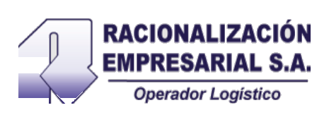
RACIEMSA
Una flota con tres tipos de combustible, y tres estructuras de costo distintas
RACIEMSA es una empresa de transporte con una particularidad que complejiza su gestión: opera una flota mixta, cada tipo de combustible con su propio comportamiento y sus propios riesgos.
4 necesidades sin resolver
Al conversar con el cliente aparecieron cuatro problemas puntuales, cada uno con su propio costo para la operación:
TPMS instalado solo de forma parcial, sin integración con la plataforma de gestión: el cliente estaba ciego en tiempo real.
Sin control en tiempo real de los abastecimientos ni visibilidad de cada carga.
El sistema base no podía cruzar RPM, nivel de combustible, ignición y velocidad de forma ágil. Ya había indicios de irregularidades en grifos aledaños que el cliente no podía comprobar por su cuenta.
Sin un cálculo claro, ni separado por tipo de combustible (Diesel, GNV, GNL).
Resolver los cuatro frentes a la vez: ampliar el TPMS junto con el dealer para gestionar la presión en tiempo real, dar visibilidad de combustible, habilitar diagnóstico ágil cruzando variables, y entregar un costo-kilómetro diario, separado por tipo de combustible.
Seguridad como eje principal, con Mantenimiento y Operación como complementarios
La urgencia de negocio estaba en Seguridad (las voladuras de neumático), pero la solución se apoyó también en visibilidad de combustible y costo-kilómetro, integrando los tres pilares de gestión de flota.
El punto de partida, entre 2025 y mayo de 2026
Este número elevado y recurrente se sostenía por la falta de visibilidad propia sobre la presión de las llantas: el cliente dependía enteramente del TPMS de su dealer, sin poder cruzar esa información con su propia data operativa ni actuar de forma preventiva.
Qué se buscaba lograr
- Reducir significativamente la frecuencia de voladuras de neumático mediante monitoreo de presión propio, en tiempo real y con alertas.
- Dar al cliente control y visibilidad total de sus abastecimientos de combustible.
- Habilitar un diagnóstico ágil de posibles sustracciones de combustible, cruzando variables que el sistema base no correlacionaba.
- Entregar costo-kilómetro diario, separado por tipo de combustible (Diesel, GNV, GNL).
- Diferenciar la propuesta de Navisaf frente a otros proveedores, de forma que el cliente vea un motivo concreto para firmar contrato.
Cinco herramientas a medida, apuntando directo a cada falencia
Se desarrollaron cinco herramientas, cada una resolviendo una de las falencias identificadas con el cliente. Cada pestaña de abajo es un desarrollo distinto.
Monitoreo de TPMS
Se impulsó junto con el dealer la ampliación de la instalación de sensores TPMS en la flota, y se construyó la integración con Navisaf para gestionar la presión en tiempo real por eje y por llanta, con semáforo de alerta por umbral PSI.
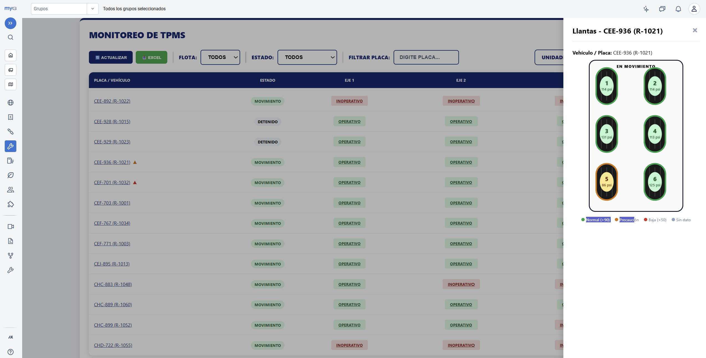
Nivel de combustible
Control de abastecimientos, dándole al cliente visibilidad inmediata de cada carga.
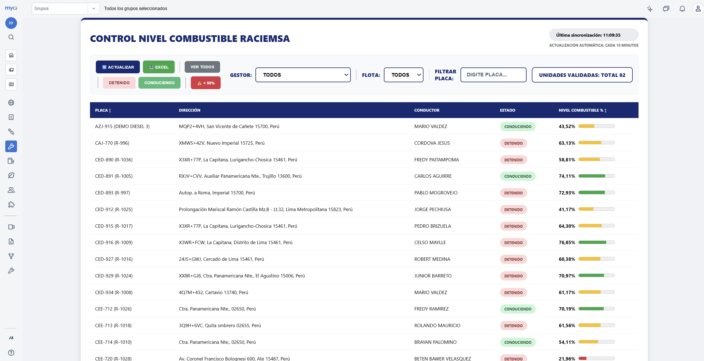
Km diario
Seguimiento de la operación día a día, base para sacar el costo-kilómetro real.
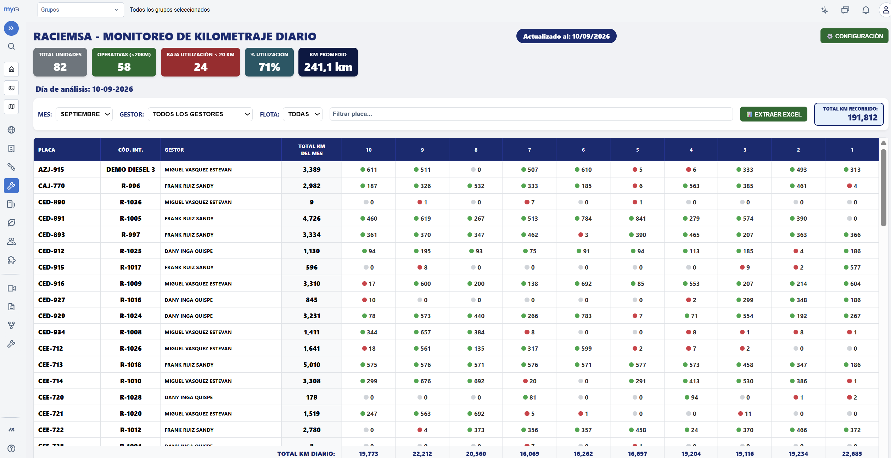
Analizador de combustible
Cruza RPM, nivel de combustible, ignición y velocidad para una búsqueda ágil de comportamientos anómalos, cubriendo la autonomía que el sistema base no tenía.
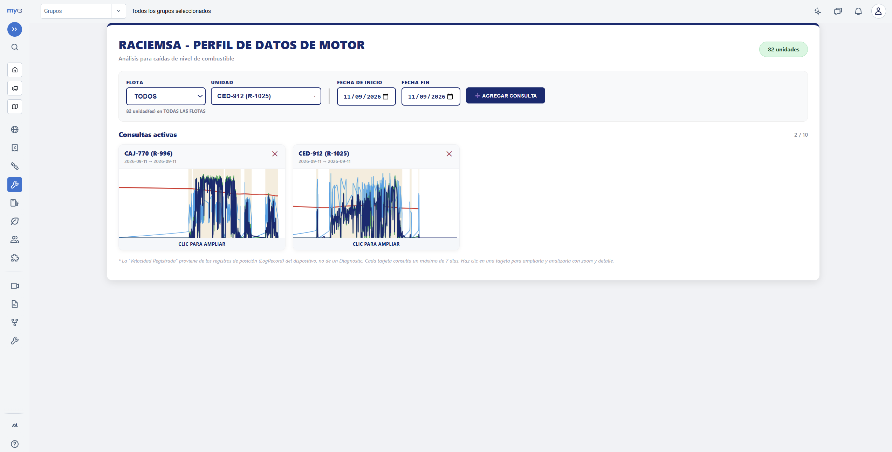
Power BI vía API
Vistas de operación, seguridad, rendimientos y performance, con costos de combustible integrando datos oficiales de OSINERGMIN, con el costo-kilómetro diario detallado por tipo de combustible.
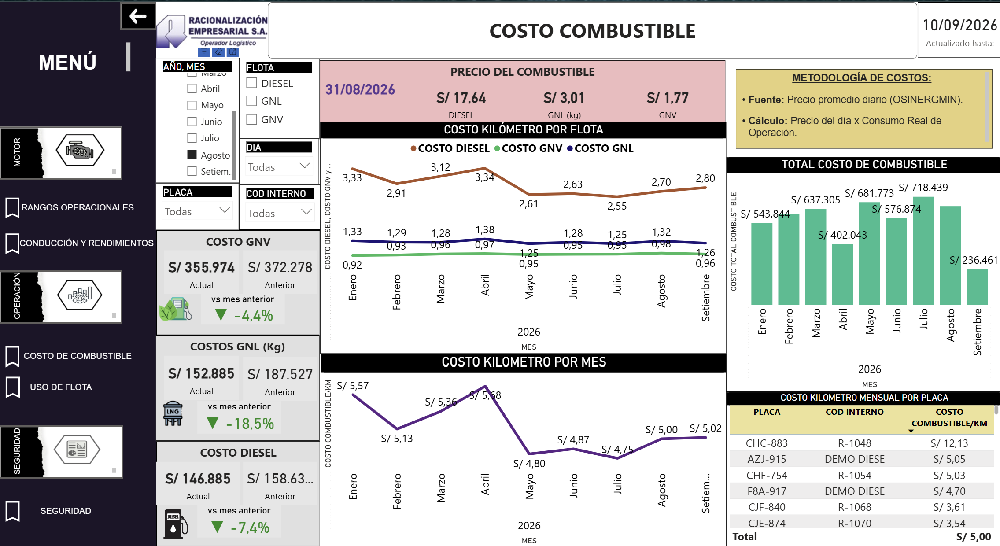
La evolución frente a la línea base
El cliente ya no depende únicamente de consultar al dealer: el mismo TPMS ahora se complementa con la telemetría en tiempo real, con datos cruzados para hacer diagnósticos más rápidos y sustentados.
Porque lo consideramos una mejora continua: sin todavía ser cliente contractual, las herramientas ya están resolviendo con datos concretos un problema que le costaba dinero y seguridad operativa al prospecto, y que su proveedor actual no atendía.
Hoy RACIEMSA gestiona, desde una sola plataforma, la presión de sus neumáticos, su combustible y su costo-kilómetro por tipo de combustible: tres frentes que antes dependían de terceros o no existían. Todo esto sin haber firmado todavía contrato con Navisaf.
Resolver varios frentes del cliente a la vez (seguridad, combustible, costos), cada uno con datos medibles, abre la puerta para ampliar el alcance más que resolver uno solo. Se sigue trabajando en identificar nuevas necesidades del cliente que ayuden a su operación.
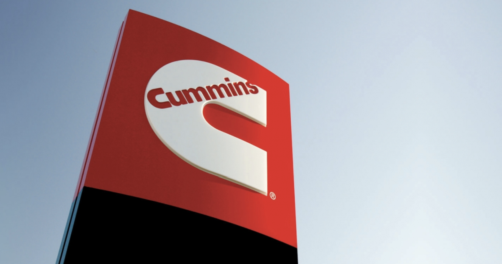
CUMMINS · PSA
Telemetría Cummins gestionada con reportes estáticos
Cliente con una flota monitoreada bajo telemetría Cummins, con límites claros de interactividad y de tiempo real en su forma de consultar los datos.
Indicadores rígidos, sin exploración interactiva
Varios de los indicadores clave de la flota se armaban de forma manual, con procesos de actualización periódica vía Power Automate, sin que el usuario final pudiera navegar, filtrar o explorar los datos de forma interactiva.
Esto significaba tiempos de espera para tener información actualizada, y una experiencia de consulta rígida, lejos de lo que hoy se espera de una plataforma de gestión de flota moderna.
Motor, Operación y Seguridad, en un dashboard integral
Un solo sistema que reúne los tres frentes de la telemetría del motor y de la operación, en vez de reportes sueltos por tema.
El punto de partida
Qué se buscaba lograr
- Migrar los indicadores manuales a un sistema interactivo, con datos en tiempo real, consumidos vía API propia.
- Integrar la solución directamente como Add-In dentro de MyGeotab, de forma nativa a la experiencia del cliente.
- Validar el modelo con el cliente para sentar las bases de una migración progresiva de todos sus indicadores restantes.
Un sistema propio, construido desde cero, vía API
Se construyó un sistema propio, conectado vía API, integrado como Add-In dentro de MyGeotab, con tres grandes módulos:
- Motor: comportamiento en tiempo real (RPM, presión de aceite, refrigerante, carga, presión de admisión), consumo, historial de encendidos, y fallas clasificadas automáticamente por severidad bajo el estándar SAE J1939 (FMI), con alertas de recurrencia.
- Operación: rendimientos (gal/hora y km/galón) y uso de flota (conducción, ralentí, tiempo detenido), con comparativas por unidad y por mes.
- Seguridad: módulo en camino a habilitarse, dentro de la misma arquitectura.
Todo con navegación temporal completa (día, mes, año), comparativas cruzadas, y un panel de inicio que resume automáticamente los hallazgos más relevantes del trimestre.
Sistema en vivo
El sistema corre con datos de demostración integrados, para poder navegarlo libremente sin depender de una conexión activa a MyGeotab.
Del reporte estático a la demanda activa del cliente
El cliente y sus gerencias mostraron un nivel de satisfacción alto con el nuevo modelo, notando la diferencia inmediata frente a la experiencia estática que tenían antes. El cliente solicitó de forma proactiva la migración progresiva de todos sus indicadores restantes hacia este nuevo sistema. Es decir, el cliente mismo generó la demanda de ampliar el alcance del servicio.
Porque lo consideramos una mejora continua: el propio cliente, sin que se lo pidiéramos, solicitó ampliar el alcance del servicio a todos sus indicadores restantes, la mejor señal de que el nuevo modelo generó valor real, no solo una mejora estética.
El salto de un modelo de reportes estáticos (Power BI + Power Automate) a un sistema interactivo, en tiempo real e integrado nativamente a MyGeotab, mejoró de forma inmediata la experiencia de consulta de sus gerencias frente a lo que tenían antes.
Validar el modelo con un piloto acotado (un sistema, con datos de demostración) antes de comprometerse a migrar todo el alcance reduce el riesgo y facilita que el propio cliente pida la expansión, en vez de tener que convencerlo.